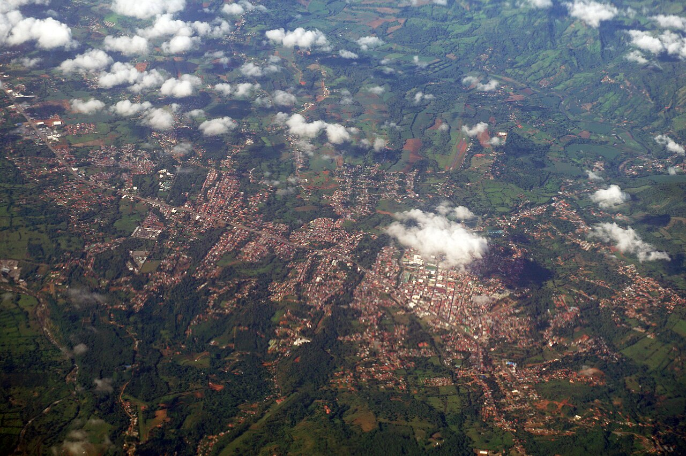
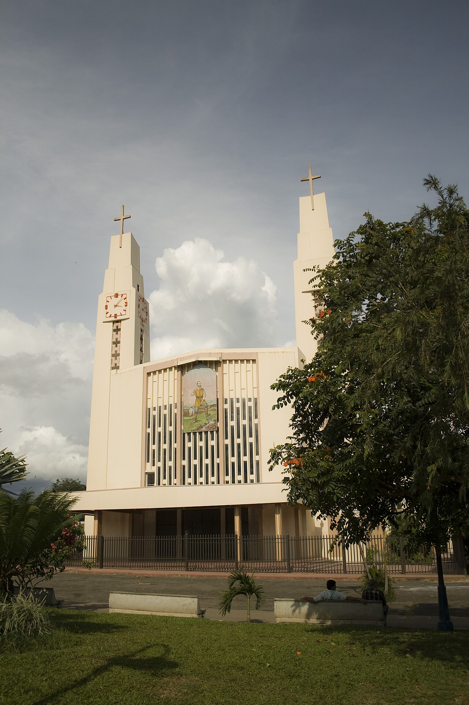
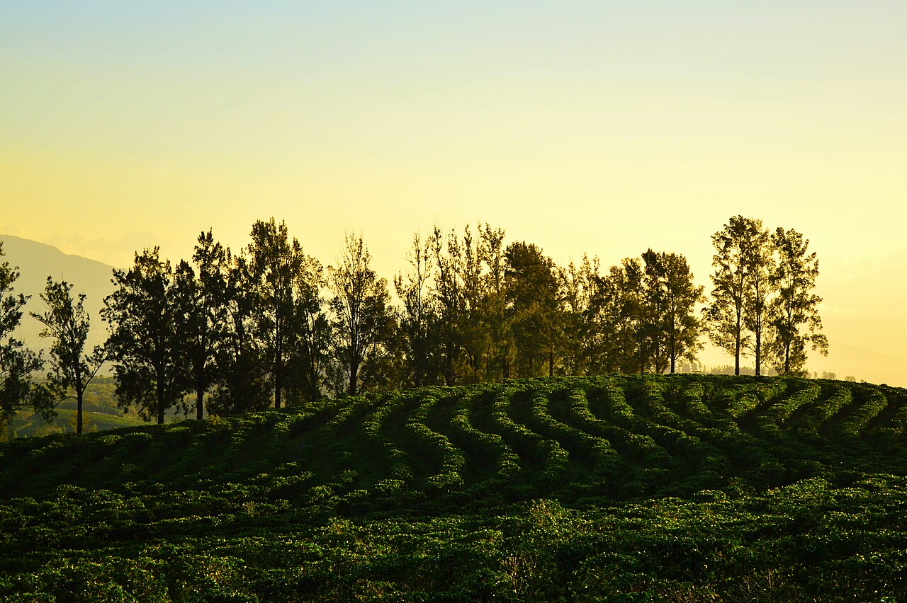
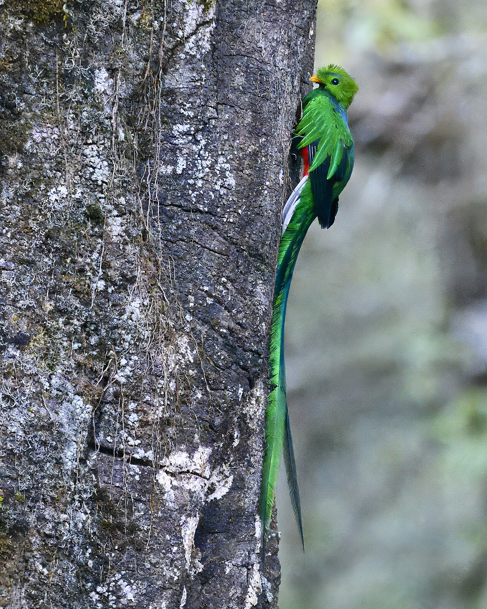
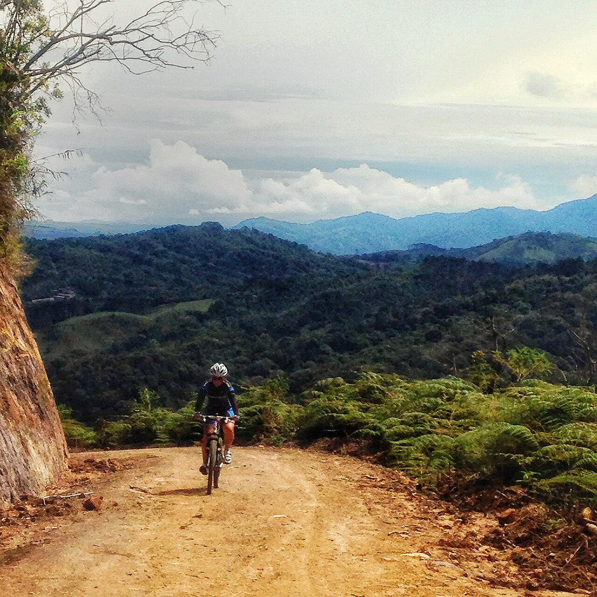
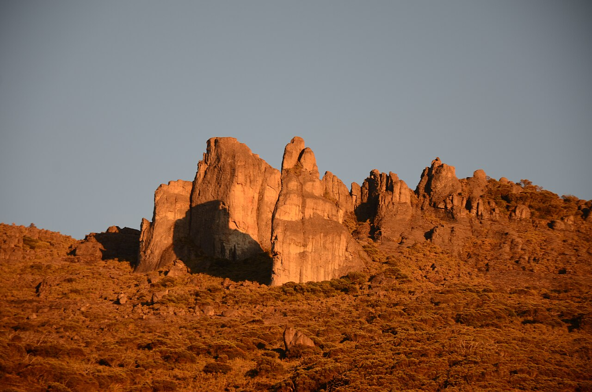
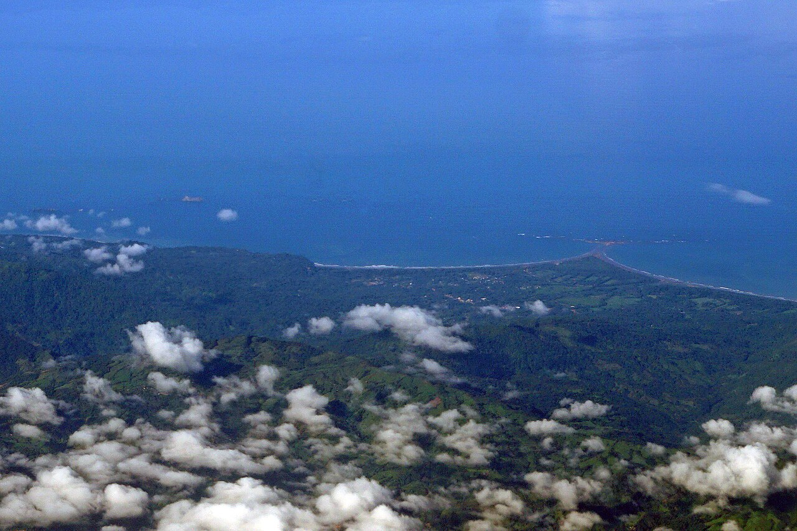
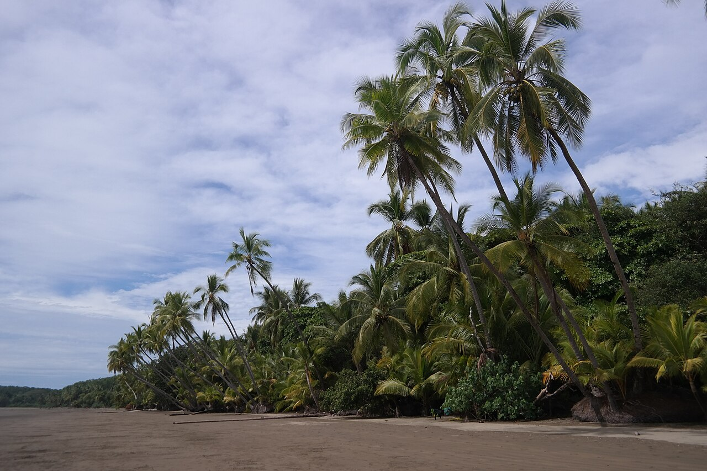
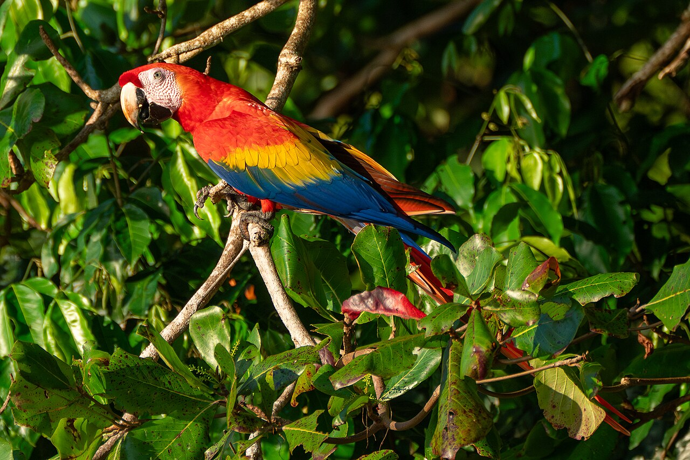
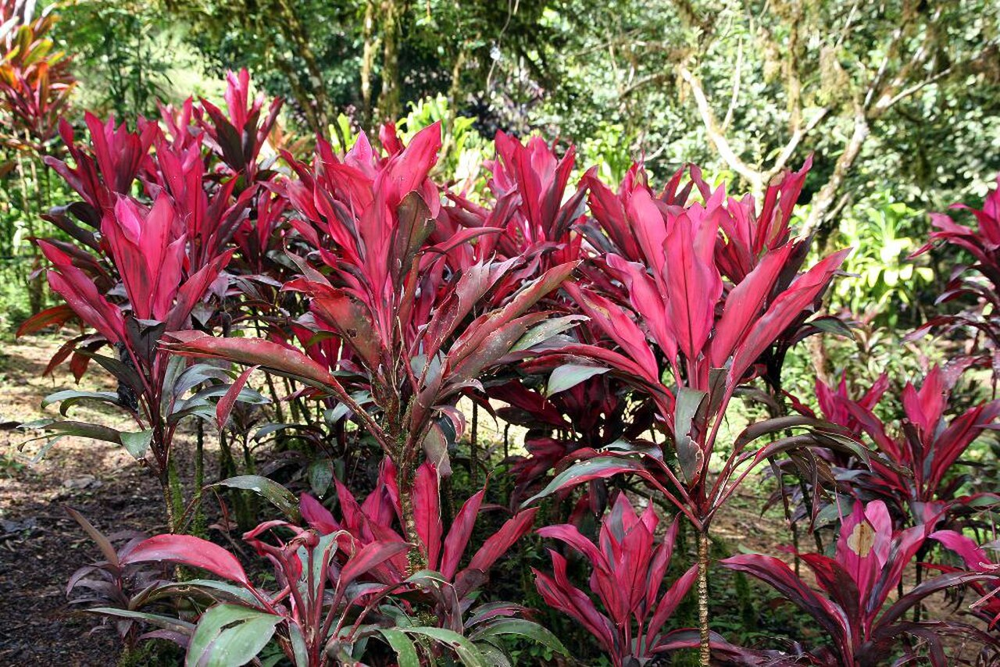

A real Costa Rican city in a fertile mountain valley in the country's southern zone — everything worth knowing before you build a life there.

The Valle de El General, seen from above San Isidro.
There is a particular kind of morning in this valley: coffee on a porch at 900 meters, the air cool enough for a light sweater, a real Tico city doing real business down in the flatland, and Costa Rica's highest peak filling the eastern sky. This guide covers everything worth knowing before you decide this is where you build — the land, the climate, the history, the villages, daily life, what things actually cost, the day trips within reach, and the legal and financial path from here to keys in hand.
Why climbing just a little bit changes everything.
San Isidro de El General sits in the Valle de El General, a huge, fertile valley between the Talamanca range and the coastal Fila Costeña ridge, about 80 miles south of San José on the Interamericana highway. The city itself, home to roughly 50,000 people (the surrounding canton of Pérez Zeledón holds closer to 200,000), is the commercial, medical, and educational hub for the entire southern half of Costa Rica: a regional hospital, a mall with a cinema, a Walmart, and one of the largest Saturday farmers markets in the country.
The valley floor itself, where the city sits at around 2,300 feet, runs warm, 77 to 86°F by day. But climb just a little, into the 850–950 meter band (2,800–3,100 feet) where villages like Quebradas and Rivas sit five to fifteen minutes outside town, and the climate changes completely: 72 to 82°F by day, mid-60s at night, no air conditioning and no heating ever required, year-round. Rainfall doesn't track elevation as cleanly as temperature does — some higher villages toward the coast road catch disproportionate rain facing the Pacific weather systems directly, while Quebradas and Rivas, tucked deeper into the valley, stay comparatively dry for their altitude.

The church at the heart of San Isidro de El General.
Filling the eastern sky above the whole valley is Chirripó, the highest point in Costa Rica at 12,536 feet, part of the Talamanca range that also holds the Chirripó foothills, dense cloud forest, and, an hour's drive away, an entirely different climate again. More on all of that later in this guide.
A valley of Bruncas, then Ticos, then a battlefield, then a martyr city.
Before the Spanish arrived, the El General valley was home to the Bruncas and Borucas, indigenous peoples who gave the region its earliest identity. The conquistador Juan Vázquez de Coronado led an expedition here in 1563, but sustained settlement came much later: between 1870 and 1899, small caseríos (hamlets) like El General, Palmares, Rivas, and Ureña began to grow into real villages.
The settlement of Ureña grew large enough to be renamed San Isidro in 1910, honoring San Isidro Labrador, Saint Isidore the Farmer, a fitting patron for a valley built on agriculture. The canton itself was created on October 9, 1931, and was almost called "El General" outright, before legislators voted days later to rename it Pérez Zeledón, honoring Pedro Pérez Zeledón (1854–1930), a jurist, diplomat, and promoter of agricultural development in Costa Rica's southern Pacific. Ureña, the original capital, was formally renamed San Isidro de El General and granted city status in 1948, drawing its name from the Río General, which still runs the length of the valley today.
The decades since have been quieter but steadily transformative: municipal water service arrived in 1943, the districts of San Pedro (1951), Platanares, and Pejibaye (1966) were annexed, and the city grew into the regional hub it is today, all while the surrounding hillsides kept doing what they'd always done, growing coffee.
Most of this canton's life happens in the hills, not the city.

A coffee farm typical of the region. Pérez Zeledón is Costa Rica's second-largest coffee-growing canton, just behind Tarrazú.
| Village | From town | Character |
|---|---|---|
| Quebradas | ~5 min | The most popular spot: ~900m, near-perfect climate, a pristine river running through it, two bus lines, mountain views with real convenience. |
| Miravalles | ~10 min | Quiet, green, sweeping valley views, cooler than Quebradas, a nature reserve with hiking trails. |
| Rivas / San Jerónimo | 15–25 min | Cooler, more land, the feel of the Chirripó foothills starting to close in. |
| San Gerardo de Rivas & above | 30–45 min | Rugged mountain living and the trailhead economy of Chirripó hikers; the Vistas de Chirripó community was built largely by North Americans. |
| Cajón (Santa Teresa) | ~30 min | An appreciating pocket anchored by the 5-star Hacienda AltaGracia resort. |
| Tinamastes / Platanillo | 25–40 min | Gorgeous, on the paved road toward the coast, but the wettest microclimates in the canton. |
| Santa Elena | 30+ min | Larger rural parcels, development-scale land. |
The expat community across all of these is real but still modest, likely a few hundred foreign residents canton-wide rather than the thousands found in Costa Rica's more famous retirement towns, concentrated mostly in Quebradas, Miravalles, and the Rivas corridor. That cuts two ways: fewer English-speaking services nearby, but also none of the inflated "foreigner pricing" that has crept into more established expat destinations. Spanish matters here in a way it doesn't everywhere in Costa Rica.
Coffee, pineapple, and a Saturday market that anchors the whole valley.
San Isidro's economy doesn't depend on tourism swings the way coastal towns do. It rests on agriculture: coffee, pineapple, sugar cane, plantains, and livestock, grown on rich volcanic valley soil. Pérez Zeledón is Costa Rica's second-largest coffee-growing region, just behind the famous Tarrazú/Los Santos area, though the national industry is contracting overall as the strong colón squeezes dollar-denominated export revenue and labor shortages push growers toward smaller, differentiated micro-lots.
"It's beautiful, affordable, and authentic, but it requires independence and Spanish proficiency."How longtime residents describe the trade-off
The Saturday feria (farmers market) in San Isidro is one of the largest in the country, and it's where the valley's agricultural identity is most visible: pineapples for $1.50, a pound of red snapper for $10, a head of lettuce for 50 cents, basil for a quarter. It's also simply where people from every village in this guide end up on Saturday mornings.
Among the most affordable regions in Costa Rica.
The casado, rice, black beans, plantains, cabbage or salad, and a choice of fish, beef, chicken, or pork, is Costa Rica's everyday dish, served at local sodas for $6 to $8. A cappuccino runs about $2.50, a beer around $3.50. Shopping at the feria rather than a supermarket is where the real savings live: a couple can fill a fridge for $40 to $50 a week buying local.
| Category | Typical cost |
|---|---|
| Weekly groceries, shopping local (feria) | $40–$80 for one or two people |
| Weekly groceries, imported brands | $100–$150 |
| Casado at a local soda | $6–$8 |
| Mid-range dinner for two | ~$42–$51 |
| Rural land | $7–40 per square meter |
| Rentals | $600–$1,500/month |
| Single person, overall monthly budget | $1,600–$2,000 |
| Retired couple, comfortable | $2,000–$3,000/month, all-in |
San Isidro-specific pricing data is genuinely sparse in the usual cost-of-living trackers, which is itself telling: this isn't a town with enough foreign residents to have generated its own cottage industry of expat budget blogs. The safest planning assumption is the general "smaller inland Costa Rican town" figures above, which consistently run below San José and well below the tourist coasts.
A cloud forest, a coastline, a national park, and a botanical garden, all a drive from home.
An hour north toward San José, the world changes completely. San Gerardo de Dota sits at over 7,000 feet in the Río Savegre valley, a cloud forest village bordering Los Quetzales National Park, genuinely cold by Costa Rican standards, sweater weather most mornings, rain expected in some form nearly every day. It's one of the only places on Earth where the resplendent quetzal, a bird striking enough that Aztec and Maya rulers once wore its feathers as a mark of status, can be found year-round rather than only in migration season.

The resplendent quetzal, photographed near San Gerardo de Dota.
The road that gets you there, Cerro de la Muerte, the Hill of Death, is Costa Rica's most storied mountain pass: curvy, often foggy, treated with real respect by everyone who drives it, and nobody drives it after dark. It's also the same road that makes a trip from San Isidro to San José a genuine three-hour undertaking rather than a quick errand.

Cerro de la Muerte, the mountain pass connecting San Isidro to San José.
Rising directly above the valley is Chirripó, Central America's highest peak, visible from much of San Isidro on a clear day. Climbing it is now a booked event rather than a spontaneous weekend: permits are online-only, reserved up to six months in advance, capped at six people per group, entrance runs $18–21/day plus $35–45 a night at Crestones Base Camp. The reward: on a clear day, both the Pacific and the Caribbean are visible from the summit at once, and the surrounding páramo holds more than 400 bird species along with jaguars, pumas, and Baird's tapir.

Los Crestones, a striking rock formation near the Chirripó summit, at sunset.
Go the other direction, down the mountain instead of up it, and forty minutes brings you to Costa Ballena, the Whale Coast. Dominical is the original bohemian surf town, found by expats in the 1970s and 80s. Uvita, in the middle, has grown into the real commercial center of the southern Pacific, built around Marino Ballena National Park and its famous Whale's Tail sandbar, one of the best humpback whale watching spots in the Americas, whales present July through October and again December through April. Ojochal, further south, was settled by Canadian and European retirees a generation ago and has become, almost by accident, the culinary capital of the region.

Punta Uvita, the point of land that forms the Whale's Tail sandbar at Marino Ballena National Park, seen from the air.

Playa Uvita, at sunset.

Scarlet macaws, common along this coast.
A family based in the hills around San Isidro is genuinely forty minutes from all of it: whale watching in Uvita, dinner in Ojochal, a sunset walk on Dominical's beach, and then home to a cool mountain evening the coast itself never gets.
Near San Vito in the Coto Brus valley, a longer day trip south, sits the Wilson Botanical Garden, a research station and garden with the second-largest palm collection on Earth, over 400 recorded bird species, and land forming part of a vast biosphere reserve protecting one of the largest remaining fragments of premontane wet forest in the region.

Wilson Botanical Garden, near San Vito in the Coto Brus valley.
What actually determines whether this happens.
Foreigners have the same legal right to titled property as Costa Rican citizens, no residency required. Every titled property has a folio real, a unique registry number, and anyone can pull its ownership record, liens, and boundary map at the Registro Nacional for a few dollars. Before wiring anything: confirm the registered owner matches the seller, hire an independent surveyor to confirm fence lines on the ground match the registered plan (a shockingly common source of disputes in rural Costa Rica), and if the land is inherited or corporately owned, confirm every heir or shareholder has actually signed off.
You don't need residency to buy or build. Costa Rica offers several paths: the Rentista visa requires proof of at least $2,500/month in passive income for two years (commonly satisfied with a $60,000 bank deposit and a letter guaranteeing the monthly disbursement), renewable, with permanent residency possible after three years and citizenship after seven. The Inversionista visa requires a $150,000 investment in real estate, an active business, or securities, also renewable, with a path to permanent residency after three years. Both require at least 4 months a year of actual residence to renew. Costa Rica's territorial tax system means only in-country income is taxed locally, a real advantage for anyone living on foreign-sourced passive income.
Non-resident bank financing is genuinely harder to get here than in some neighboring countries: private banks typically want 40–50% down, and approval can take 3 to 6 months. Seller financing fills the gap and is common, roughly 1 in 5 Costa Rican transactions involve it, typically 30–50% down with 3–5 year terms, secured by a registered hipoteca a local attorney drafts. U.S. cross-border lenders (Second Street, Volo Loans) offer 30-year fixed mortgages with 25–30% down, but only on titled, completed homes, useful for buying existing property, not for funding new construction.
This valley has been a Brunca homeland, a battlefield, a martyr city, and for a century now, one of Costa Rica's steadiest agricultural regions, all without ever needing to perform for tourists.
The land is real, the mountains never stop, the coast is close, and the cost of all of it is a fraction of almost anywhere else in the country worth wanting. What's left is simply deciding it's yours.